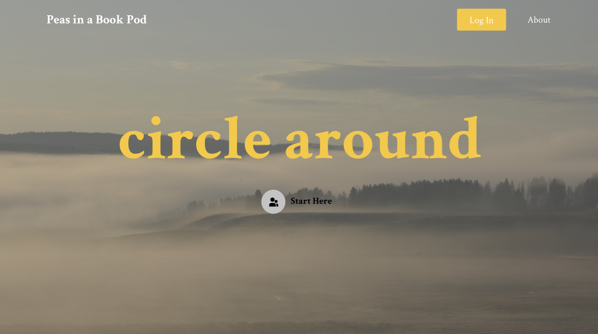
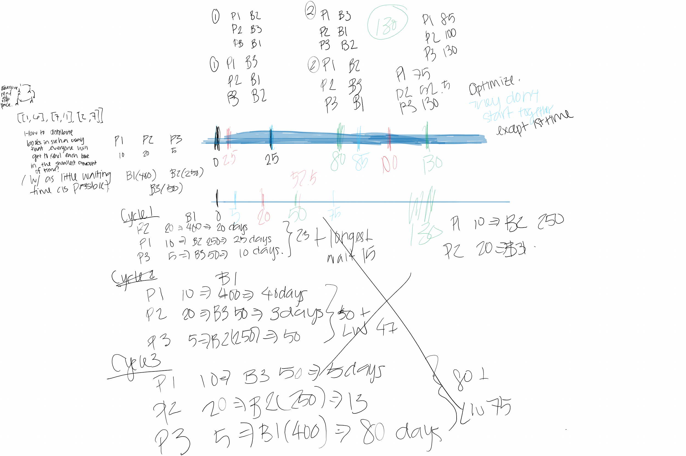

Work in Progress: Peas in a Book Pod

I picked up reading again in quarantine.
I found myself to be a small subset of people fortunate to be surrounded by books gathered over the years. With the libraries closed during quarantine, I weigh between buying a new book or reading one on Overdrive (a library ebook app).
I was raised to be conscious of subtle actions, such as physical book trading, that contribute to the carbon footprint. On the other hand, I like disconnecting for a quiet afternoon with a book I can carry in my hands, with no WiFi or blue light.
At the same time, I thought about joining a book club to make some new friends. Then, I started seeing people getting books for strangers on Instagram:
Buy me a book, share on social media as I did, and more people will buy you books!
This gave me idea to utilize our existing network and circulate our own books in an unconventional book club.
Problem Space
Many book hoarders are happy to lend to their friends and borrow from others to build a literate, tight-knit community. However, they are not only “passionate about sharing - but also getting back - beloved books.”
Many encountered hateful, inconsiderate, forgetful friends:
In a few months, I could no longer find my books and then discovered in their families donation pile. How disrespectful!
Some people resort to the following solutions:
Jean Jacobs wrote a curse to those who don’t return her books. All books were returned.
To ensure that all parties are commited to respectful rules, maybe we should get all parties invested in a giant book exchange.

Technical Problem: Design a system to circulate owned books between a collection of readers in a pod.
I decided to build a web app because a website has a wider reach than mobile apps, especially at its beginning with a small audience. I got inspiration from simply-designed web apps such as Kahoot, Tinder, and Uber.
I kept in mind to implement only one robust main feature that characrizes this project before distracting myself with stretch goals. I have a problem of being too ambitious too early. Focusing on one feature helps keep the user interface clean and easy-to-follow.
I decided to use the Angular Framework because I recently learned it at a hackathon and look forward to exploring it further. I am choosing Firestore to keep a scalable database of the information outlined in the classes below.
//pseudocode in typescript
class Reader {
String uid;
String name;
ArrayList<Book> book;
int pagesReadPerDay;
boolean reading;
void createBook(title, author, ...);
void read(Book book); // or finish a book
void update(Book book);
void joinPod();
void leavePod();
// stretch goal: adminPod()
}
class Book {
String bookId;
String ownerUid;
boolean availability;
String title;
String Author;
int pageCount;
String Description;
String genre;
String purchaseLink;
}
class Pod {
String podId; // join code
HashMap<Person, Book> assignments;
//keeping track of timeline?
/*
Brute Force: recursive backtracking to find best combination to reduce total wait time of everybody in the cycle of a pod. Stretch goal: once somebody finishes, somebody else can submit new book into the cycle.
=> maybe explore a DP solution?
*/
}
What I am working on right now is solving the problem of keeping track of the book assignments in a pod. In other words, I’m thinking about how I can design the Pod class to circulate the books most efficiently.
If you have thoughts/suggestions you would like to share with me, feel free to reach out! I’m down to just chat about ideas and meeting people too :)